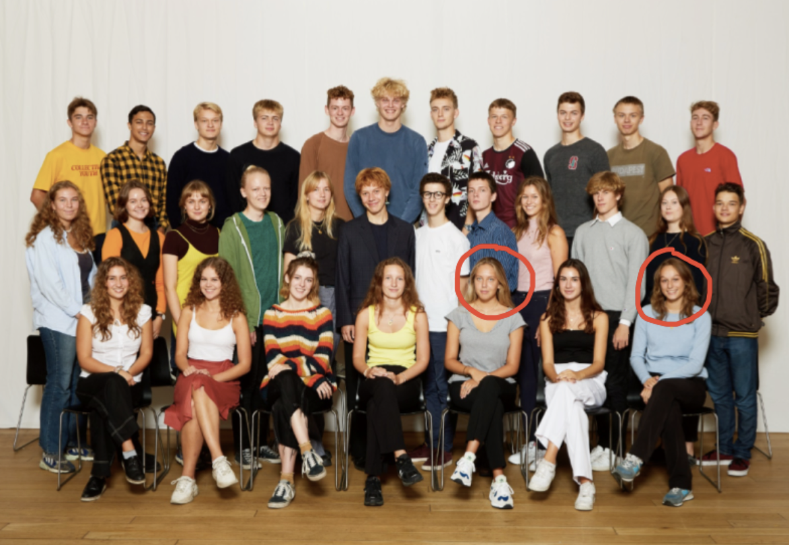

Rysensteen youth
Here is a picture of our class, which is called 2.F (second year in high-school).
We are 30 people in our class, and we are all between 17 and 18. We all come from different countries, and many of us has lived outside of Danmark. Actually, we have 10 different nationalities in our class, two of us are from France (us, writers, we are cirkled in red), then some of us are from Sweden, England, Italy, German, etc.
We are going to stay in the same class for all of our the three years in high school. We all have the same schedule, except when we have option class (informatics, rhetoric or business economy). We start almost everyday at 8:15, and we finish class 15:35, if none our teachers are absent of course.
Once in a while, we do things all together, for example, we have a Christmas dinner/party every year, we also gather on regular basis for informal events. In class, we spend most of the time doing team work for all kind of presentation and homework.